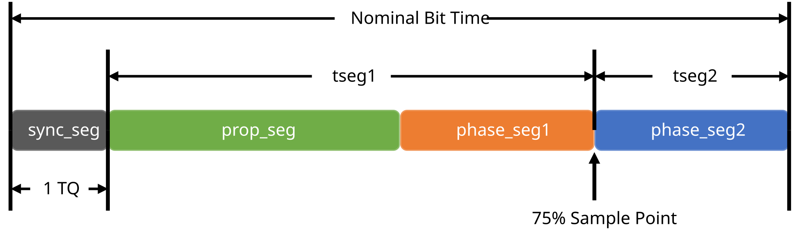
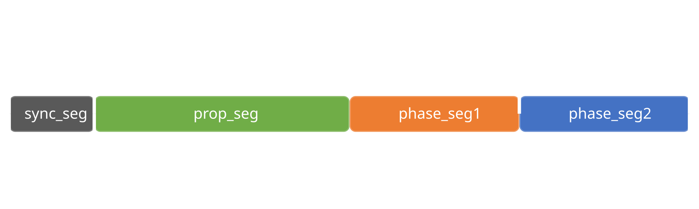

Bit Timing Configuration#
Attention
This feature is experimental. The implementation might change in future versions.
The CAN protocol, specified in ISO 11898, allows the bitrate, sample point and number of samples to be optimized for a given application. These parameters, known as bit timings, can be adjusted to meet the requirements of the communication system and the physical communication channel.
These parameters include:
tseg1: The time segment 1 (TSEG1) is the amount of time from the end of the sync segment until the sample point. It is expressed in time quanta (TQ).
tseg2: The time segment 2 (TSEG2) is the amount of time from the sample point until the end of the bit. It is expressed in TQ.
sjw: The synchronization jump width (SJW) is the maximum number of TQ that the controller can resynchronize every bit.
sample point: The sample point is defined as the point in time within a bit where the bus controller samples the bus for dominant or recessive levels. It is typically expressed as a percentage of the bit time. The sample point depends on the bus length and propagation time as well as the information processing time of the nodes.


Bit Timing and Sample Point#
For example, consider a bit with a total duration of 8 TQ and a sample point at 75%. The values for TSEG1, TSEG2 and SJW would be 5, 2, and 2, respectively. The sample point would be 6 TQ after the start of the bit, leaving 2 TQ for the information processing by the bus nodes.
Note
The values for TSEG1, TSEG2 and SJW are chosen such that the sample point is at least 50% of the total bit time. This ensures that there is sufficient time for the signal to stabilize before it is sampled.
Note
In CAN FD, the arbitration (nominal) phase and the data phase can have different bit rates. As a result, there are two separate sample points to consider.
Another important parameter is f_clock: The CAN system clock frequency
in Hz. This frequency is used to derive the TQ size from the bit rate.
The relationship is f_clock = (tseg1+tseg2+1) * bitrate * brp.
The bit rate prescaler value brp is usually determined by the controller
and is chosen to ensure that the resulting bit time is an integer value.
Typical CAN clock frequencies are 8-80 MHz.
In most cases, the recommended settings for a predefined set of common
bit rates will work just fine. In some cases, however, it may be necessary
to specify custom bit timings. The BitTiming and
BitTimingFd classes can be used for this purpose to specify
bit timings in a relatively interface agnostic manner.
BitTiming or BitTimingFd can also help you to
produce an overview of possible bit timings for your desired bit rate:
>>> import contextlib
>>> import can
...
>>> timings = set()
>>> for sample_point in range(50, 100):
... with contextlib.suppress(ValueError):
... timings.add(
... can.BitTiming.from_sample_point(
... f_clock=8_000_000,
... bitrate=250_000,
... sample_point=sample_point,
... )
... )
...
>>> for timing in sorted(timings, key=lambda x: x.sample_point):
... print(timing)
BR: 250_000 bit/s, SP: 50.00%, BRP: 2, TSEG1: 7, TSEG2: 8, SJW: 4, BTR: C176h, CLK: 8MHz
BR: 250_000 bit/s, SP: 56.25%, BRP: 2, TSEG1: 8, TSEG2: 7, SJW: 4, BTR: C167h, CLK: 8MHz
BR: 250_000 bit/s, SP: 62.50%, BRP: 2, TSEG1: 9, TSEG2: 6, SJW: 4, BTR: C158h, CLK: 8MHz
BR: 250_000 bit/s, SP: 68.75%, BRP: 2, TSEG1: 10, TSEG2: 5, SJW: 4, BTR: C149h, CLK: 8MHz
BR: 250_000 bit/s, SP: 75.00%, BRP: 2, TSEG1: 11, TSEG2: 4, SJW: 4, BTR: C13Ah, CLK: 8MHz
BR: 250_000 bit/s, SP: 81.25%, BRP: 2, TSEG1: 12, TSEG2: 3, SJW: 3, BTR: 812Bh, CLK: 8MHz
BR: 250_000 bit/s, SP: 87.50%, BRP: 2, TSEG1: 13, TSEG2: 2, SJW: 2, BTR: 411Ch, CLK: 8MHz
BR: 250_000 bit/s, SP: 93.75%, BRP: 2, TSEG1: 14, TSEG2: 1, SJW: 1, BTR: 010Dh, CLK: 8MHz
It is possible to specify CAN 2.0 bit timings using the config file:
[default]
f_clock=8000000
brp=1
tseg1=5
tseg2=2
sjw=1
nof_samples=1
The same is possible for CAN FD:
[default]
f_clock=80000000
nom_brp=1
nom_tseg1=119
nom_tseg2=40
nom_sjw=40
data_brp=1
data_tseg1=29
data_tseg2=10
data_sjw=10
A dict of the relevant config parameters can be easily obtained by calling
dict(timing) or {**timing} where timing is the BitTiming or
BitTimingFd instance.
Check Configuration for more information about saving and loading configurations.
- class can.BitTiming(f_clock, brp, tseg1, tseg2, sjw, nof_samples=1, strict=False)[source]#
Bases:
MappingRepresentation of a bit timing configuration for a CAN 2.0 bus.
The class can be constructed in multiple ways, depending on the information available. The preferred way is using CAN clock frequency, prescaler, tseg1, tseg2 and sjw:
can.BitTiming(f_clock=8_000_000, brp=1, tseg1=5, tseg2=1, sjw=1)
Alternatively you can set the bitrate instead of the bit rate prescaler:
can.BitTiming.from_bitrate_and_segments( f_clock=8_000_000, bitrate=1_000_000, tseg1=5, tseg2=1, sjw=1 )
It is also possible to specify BTR registers:
can.BitTiming.from_registers(f_clock=8_000_000, btr0=0x00, btr1=0x14)
or to calculate the timings for a given sample point:
can.BitTiming.from_sample_point(f_clock=8_000_000, bitrate=1_000_000, sample_point=75.0)
- Parameters:
f_clock (int) – The CAN system clock frequency in Hz.
brp (int) – Bit rate prescaler.
tseg1 (int) – Time segment 1, that is, the number of quanta from (but not including) the Sync Segment to the sampling point.
tseg2 (int) – Time segment 2, that is, the number of quanta from the sampling point to the end of the bit.
sjw (int) – The Synchronization Jump Width. Decides the maximum number of time quanta that the controller can resynchronize every bit.
nof_samples (int) – Either 1 or 3. Some CAN controllers can also sample each bit three times. In this case, the bit will be sampled three quanta in a row, with the last sample being taken in the edge between TSEG1 and TSEG2. Three samples should only be used for relatively slow baudrates.
strict (bool) – If True, restrict bit timings to the minimum required range as defined in ISO 11898. This can be used to ensure compatibility across a wide variety of CAN hardware.
- Raises:
ValueError – if the arguments are invalid.
- classmethod from_bitrate_and_segments(f_clock, bitrate, tseg1, tseg2, sjw, nof_samples=1, strict=False)[source]#
Create a
BitTiminginstance from bitrate and segment lengths.- Parameters:
f_clock (int) – The CAN system clock frequency in Hz.
bitrate (int) – Bitrate in bit/s.
tseg1 (int) – Time segment 1, that is, the number of quanta from (but not including) the Sync Segment to the sampling point.
tseg2 (int) – Time segment 2, that is, the number of quanta from the sampling point to the end of the bit.
sjw (int) – The Synchronization Jump Width. Decides the maximum number of time quanta that the controller can resynchronize every bit.
nof_samples (int) – Either 1 or 3. Some CAN controllers can also sample each bit three times. In this case, the bit will be sampled three quanta in a row, with the last sample being taken in the edge between TSEG1 and TSEG2. Three samples should only be used for relatively slow baudrates.
strict (bool) – If True, restrict bit timings to the minimum required range as defined in ISO 11898. This can be used to ensure compatibility across a wide variety of CAN hardware.
- Raises:
ValueError – if the arguments are invalid.
- Return type:
- classmethod from_registers(f_clock, btr0, btr1)[source]#
Create a
BitTiminginstance from registers btr0 and btr1.- Parameters:
f_clock (int) – The CAN system clock frequency in Hz.
btr0 (int) – The BTR0 register value used by many CAN controllers.
btr1 (int) – The BTR1 register value used by many CAN controllers.
- Raises:
ValueError – if the arguments are invalid.
- Return type:
- classmethod iterate_from_sample_point(f_clock, bitrate, sample_point=69.0)[source]#
Create a
BitTimingiterator with all the solutions for a sample point.- Parameters:
f_clock (int) – The CAN system clock frequency in Hz.
bitrate (int) – Bitrate in bit/s.
sample_point (int) – The sample point value in percent.
- Raises:
ValueError – if the arguments are invalid.
- Return type:
Iterator[BitTiming]
- classmethod from_sample_point(f_clock, bitrate, sample_point=69.0)[source]#
Create a
BitTiminginstance for a sample point.This function tries to find bit timings, which are close to the requested sample point. It does not take physical bus properties into account, so the calculated bus timings might not work properly for you.
The
oscillator_tolerance()function might be helpful to evaluate the bus timings.- Parameters:
f_clock (int) – The CAN system clock frequency in Hz.
bitrate (int) – Bitrate in bit/s.
sample_point (int) – The sample point value in percent.
- Raises:
ValueError – if the arguments are invalid.
- Return type:
- property f_clock: int#
The CAN system clock frequency in Hz.
- property bitrate: int#
Bitrate in bits/s.
- property brp: int#
Bit Rate Prescaler.
- property tq: int#
Time quantum in nanoseconds
- property nbt: int#
Nominal Bit Time.
- property tseg1: int#
Time segment 1.
The number of quanta from (but not including) the Sync Segment to the sampling point.
- property tseg2: int#
Time segment 2.
The number of quanta from the sampling point to the end of the bit.
- property sjw: int#
Synchronization Jump Width.
- property nof_samples: int#
Number of samples (1 or 3).
- property sample_point: float#
Sample point in percent.
- property btr0: int#
Bit timing register 0 for SJA1000.
- property btr1: int#
Bit timing register 1 for SJA1000.
- class can.BitTimingFd(f_clock, nom_brp, nom_tseg1, nom_tseg2, nom_sjw, data_brp, data_tseg1, data_tseg2, data_sjw, strict=False)[source]#
Bases:
MappingRepresentation of a bit timing configuration for a CAN FD bus.
The class can be constructed in multiple ways, depending on the information available. The preferred way is using CAN clock frequency, bit rate prescaler, tseg1, tseg2 and sjw for both the arbitration (nominal) and data phase:
can.BitTimingFd( f_clock=80_000_000, nom_brp=1, nom_tseg1=59, nom_tseg2=20, nom_sjw=10, data_brp=1, data_tseg1=6, data_tseg2=3, data_sjw=2, )
Alternatively you can set the bit rates instead of the bit rate prescalers:
can.BitTimingFd.from_bitrate_and_segments( f_clock=80_000_000, nom_bitrate=1_000_000, nom_tseg1=59, nom_tseg2=20, nom_sjw=10, data_bitrate=8_000_000, data_tseg1=6, data_tseg2=3, data_sjw=2, )
It is also possible to calculate the timings for a given pair of arbitration and data sample points:
can.BitTimingFd.from_sample_point( f_clock=80_000_000, nom_bitrate=1_000_000, nom_sample_point=75.0, data_bitrate=8_000_000, data_sample_point=70.0, )
Initialize a BitTimingFd instance with the specified parameters.
- Parameters:
f_clock (int) – The CAN system clock frequency in Hz.
nom_brp (int) – Nominal (arbitration) phase bitrate prescaler.
nom_tseg1 (int) – Nominal phase Time segment 1, that is, the number of quanta from (but not including) the Sync Segment to the sampling point.
nom_tseg2 (int) – Nominal phase Time segment 2, that is, the number of quanta from the sampling point to the end of the bit.
nom_sjw (int) – The Synchronization Jump Width for the nominal phase. This value determines the maximum number of time quanta that the controller can resynchronize every bit.
data_brp (int) – Data phase bitrate prescaler.
data_tseg1 (int) – Data phase Time segment 1, that is, the number of quanta from (but not including) the Sync Segment to the sampling point.
data_tseg2 (int) – Data phase Time segment 2, that is, the number of quanta from the sampling point to the end of the bit.
data_sjw (int) – The Synchronization Jump Width for the data phase. This value determines the maximum number of time quanta that the controller can resynchronize every bit.
strict (bool) – If True, restrict bit timings to the minimum required range as defined in ISO 11898. This can be used to ensure compatibility across a wide variety of CAN hardware.
- Raises:
ValueError – if the arguments are invalid.
- classmethod from_bitrate_and_segments(f_clock, nom_bitrate, nom_tseg1, nom_tseg2, nom_sjw, data_bitrate, data_tseg1, data_tseg2, data_sjw, strict=False)[source]#
Create a
BitTimingFdinstance with the bitrates and segments lengths.- Parameters:
f_clock (int) – The CAN system clock frequency in Hz.
nom_bitrate (int) – Nominal (arbitration) phase bitrate in bit/s.
nom_tseg1 (int) – Nominal phase Time segment 1, that is, the number of quanta from (but not including) the Sync Segment to the sampling point.
nom_tseg2 (int) – Nominal phase Time segment 2, that is, the number of quanta from the sampling point to the end of the bit.
nom_sjw (int) – The Synchronization Jump Width for the nominal phase. This value determines the maximum number of time quanta that the controller can resynchronize every bit.
data_bitrate (int) – Data phase bitrate in bit/s.
data_tseg1 (int) – Data phase Time segment 1, that is, the number of quanta from (but not including) the Sync Segment to the sampling point.
data_tseg2 (int) – Data phase Time segment 2, that is, the number of quanta from the sampling point to the end of the bit.
data_sjw (int) – The Synchronization Jump Width for the data phase. This value determines the maximum number of time quanta that the controller can resynchronize every bit.
strict (bool) – If True, restrict bit timings to the minimum required range as defined in ISO 11898. This can be used to ensure compatibility across a wide variety of CAN hardware.
- Raises:
ValueError – if the arguments are invalid.
- Return type:
- classmethod iterate_from_sample_point(f_clock, nom_bitrate, nom_sample_point, data_bitrate, data_sample_point)[source]#
Create an
BitTimingFditerator with all the solutions for a sample point.- Parameters:
f_clock (int) – The CAN system clock frequency in Hz.
nom_bitrate (int) – Nominal bitrate in bit/s.
nom_sample_point (int) – The sample point value of the arbitration phase in percent.
data_bitrate (int) – Data bitrate in bit/s.
data_sample_point (int) – The sample point value of the data phase in percent.
- Raises:
ValueError – if the arguments are invalid.
- Return type:
Iterator[BitTimingFd]
- classmethod from_sample_point(f_clock, nom_bitrate, nom_sample_point, data_bitrate, data_sample_point)[source]#
Create a
BitTimingFdinstance for a sample point.This function tries to find bit timings, which are close to the requested sample points. It does not take physical bus properties into account, so the calculated bus timings might not work properly for you.
The
oscillator_tolerance()function might be helpful to evaluate the bus timings.- Parameters:
f_clock (int) – The CAN system clock frequency in Hz.
nom_bitrate (int) – Nominal bitrate in bit/s.
nom_sample_point (int) – The sample point value of the arbitration phase in percent.
data_bitrate (int) – Data bitrate in bit/s.
data_sample_point (int) – The sample point value of the data phase in percent.
- Raises:
ValueError – if the arguments are invalid.
- Return type:
- property f_clock: int#
The CAN system clock frequency in Hz.
- property nom_bitrate: int#
Nominal (arbitration phase) bitrate.
- property nom_brp: int#
Prescaler value for the arbitration phase.
- property nom_tq: int#
Nominal time quantum in nanoseconds
- property nbt: int#
Number of time quanta in a bit of the arbitration phase.
- property nom_tseg1: int#
Time segment 1 value of the arbitration phase.
This is the sum of the propagation time segment and the phase buffer segment 1.
- property nom_tseg2: int#
Time segment 2 value of the arbitration phase. Also known as phase buffer segment 2.
- property nom_sjw: int#
Synchronization jump width of the arbitration phase.
The phase buffer segments may be shortened or lengthened by this value.
- property nom_sample_point: float#
Sample point of the arbitration phase in percent.
- property data_bitrate: int#
Bitrate of the data phase in bit/s.
- property data_brp: int#
Prescaler value for the data phase.
- property data_tq: int#
Data time quantum in nanoseconds
- property dbt: int#
Number of time quanta in a bit of the data phase.
- property data_tseg1: int#
TSEG1 value of the data phase.
This is the sum of the propagation time segment and the phase buffer segment 1.
- property data_tseg2: int#
TSEG2 value of the data phase. Also known as phase buffer segment 2.
- property data_sjw: int#
Synchronization jump width of the data phase.
The phase buffer segments may be shortened or lengthened by this value.
- property data_sample_point: float#
Sample point of the data phase in percent.
- oscillator_tolerance(node_loop_delay_ns=250.0, bus_length_m=10.0)[source]#
Oscillator tolerance in percent according to ISO 11898-1.
- Parameters:
node_loop_delay_ns (float) – Transceiver loop delay in nanoseconds.
bus_length_m (float) – Bus length in meters.
- Return type:
float
- recreate_with_f_clock(f_clock)[source]#
Return a new
BitTimingFdinstance with the given f_clock but the same bit rates and sample points.- Parameters:
f_clock (int) – The CAN system clock frequency in Hz.
- Raises:
ValueError – if no suitable bit timings were found.
- Return type: